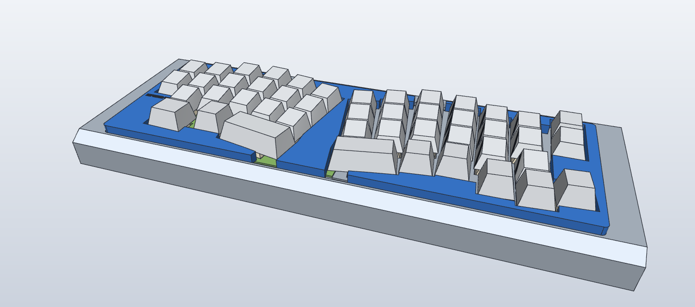
근거 · model/print_v5/README.md · tools/coupon_v5.py
| 출력 부품 | 수량 | 부피 | X × Y × Z mm | 출력 방향 | 내용 |
|---|---|---|---|---|---|
좌 mount pairMOUNT_L_PAIR_V3 | 1 | 4.3 cm³ | 30 × 90 × 8 | 자유(MJF) · STL은 밑면이 아래 | 주문 1 · H05·H01 ↔ SO1·SO2. USB 아웃렛을 피해 꺾인다 |
우 mount pairMOUNT_R_PAIR_V3 | 1 | 4.3 cm³ | 41 × 92 × 8 | 자유 · STL은 밑면이 아래 | 주문 1 · H06·H04 ↔ SO5·SO4 (Y≤94 절단으로 후면 내벽 여유 확보) |
중앙 mountMOUNT_H02_SO3_MIN_V2 | 1 | 1.8 cm³ | 13 × 50 × 8 | 자유 · STL은 밑면이 아래 | 주문 1 · H02 ↔ SO3. spine이 프레임 윗면에 직접 얹힘 |
앞 mountMOUNT_H03_SO6_MIN_V2 | 1 | 2.9 cm³ | 69 × 11 × 8 | 자유 · STL은 밑면이 아래 | 주문 1 · H03 ↔ SO6. 단일 연속 보강 리브 적용, 굽힘·층간 확인 1순위 |
plate 왼쪽PLATE_L_SPLIT_V1 | 1 | 38.3 cm³ | 148 × 95 × 8 | 자유, 판을 수평으로 요청 · STL은 윗면이 아래 | 주문 2 · 3층. SO1·SO2·SO3·SO6 카운터보어, 앞 이음 tab · v5: 앞 가장자리 받침 + 다리 자석 포켓 Ø3.3. 뒤 플랜지는 받침 블록 ①②에 얹힌다 |
plate 오른쪽PLATE_R_SPLIT_V1 | 1 | 40.5 cm³ | 154 × 95 × 8 | 자유, 판을 수평으로 요청 · STL은 윗면이 아래 | 주문 2 · 3층. SO4·SO5 카운터보어, 앞 이음 포켓·너트 포켓 · v5: 앞 가장자리 받침 + 다리 자석 포켓 Ø3.3. 뒤 플랜지는 받침 블록 ③에 얹힌다 |
spinePLATE_SPINE_V1 | 1 | 1.8 cm³ | 31 × 49 × 5 | 자유 · STL은 윗면이 아래 | 주문 2 · M2 4개와 너트로 두 조각을 잇는다. 배선 홈 3곳 |
컨트롤러 브래킷CTRL_BRACKET_SPLIT_V1 | 1 | 1.6 cm³ | 36 × 26 × 8 | 자유 · STL은 지붕이 아래 | 주문 2 · plate에 M2 2개. Pro Micro는 나사 없이 끝 립과 스냅 암으로 잡는다. 걸림은 스냅 시험편 결과로 고른다 |
스냅 시험편(자리 A·B·C)CTRL_SNAP_TRIAL | 1 | 4.9 cm³ | 36 × 83 × 8 | 자유 · STL은 지붕이 아래 | 주문 1 · 브래킷 자리 3개를 레일끼리 이은 한 부품(떼어 쓰지 않는다). 형상은 브래킷과 같고 걸림만 다르다. A 얕게(암 0.25, 끝 0.7), B 현행(0.4, 0.98), C 깊게(0.55, 1.2) |
뒤 받침 블록REAR_REST_1_V5, REAR_REST_2_V5, REAR_REST_3_V5 | 3 | 1.0 cm³ | 14 × 4 × 7 | 자유(MJF) · STL은 밑면이 아래 | 주문 2 · 같은 형상 3개(14 × 4 × 4.5, L자 턱 포함 총 높이 7.0 stacked 결합). 케이스 뒤 벽 보스 ①②③ 위에 패드로 붙여 plate 뒤 플랜지 노치에 끼워 받친다. 남는 틈은 패드 두께로 맞춘다 |
커버 LCOVER_L_DRAFT_TBD | 1 | 15.6 cm³ | 102 × 95 × 7 | 업체가 정함(레진, 받침은 보스 쪽 아랫면) · STL은 윗면이 아래 | 주문 2(v5 승인 후 다시 내보냄) · 8001 투명 레진 · SO1·SO2 보스 · 두께 6 · 아래 다리 끝 자석 포켓 Ø3.2 |
커버 TCOVER_T_DRAFT_TBD | 1 | 14.2 cm³ | 86 × 95 × 8 | 업체가 정함(레진, 받침은 보스 쪽 아랫면) · STL은 윗면이 아래 | 주문 2(v5 승인 후 다시 내보냄) · 8001 투명 레진 · SO3·SO6 보스 · 두께 6 · 앞 이음 나사머리 회피 포켓(Ø4.6×0.6) |
커버 RCOVER_R_DRAFT_TBD | 1 | 15.8 cm³ | 129 × 95 × 8 | 업체가 정함(레진, 받침은 보스 쪽 아랫면) · STL은 윗면이 아래 | 주문 2(v5 승인 후 다시 내보냄) · 8001 투명 레진 · SO4·SO5 보스 · 두께 6 · 아래 다리 끝 자석 포켓 Ø3.2 |
이음 쿠폰 L(단독 탭)SEAM_COUPON_L | 1 | 1.9 cm³ | 29 × 22 × 5 | 자유, 판을 수평으로 요청 · STL은 윗면이 아래 | 주문 1 · L쪽 단독 탭. B 쿠폰 +Y 가장자리에 통합된 R 포켓 3종(S1 0.15/4.0 · S2 0.25/4.2 · S3 0.35/4.4)에 번갈아 끼워 M2×5 + 너트로 비교한다 |
부피와 크기는 모델에서 읽은 값이다(합계 148.9 cm³). JLC3DP 최소 부품 크기 30 × 30 × 10보다 작은 부품: 중앙 mount, 앞 mount, 컨트롤러 브래킷, 뒤 받침 블록, 이음 쿠폰 L(단독 탭). 두께가 10보다 얇은 부품: 좌 mount pair, 우 mount pair, plate 왼쪽, plate 오른쪽, spine, 스냅 시험편(자리 A·B·C), 커버 L, 커버 T, 커버 R. 접수 가능 여부를 업체에 확인한다.
| 구매품 | 수량 | 규격·후보 | 정할 것 |
|---|---|---|---|
| M3 열압입 인서트 | 6 | 보유품: 원형 황동 M3, 외경 Ø5 × 높이 4(20개 중 6개). mount 보스 구멍 Ø4.2 × 깊이 5에 인두로 넣고 윗면을 보스 윗면에 맞춘다 | 구멍 지름은 B 쿠폰 행 D(4.0 / 4.2 / 4.4 / 4.6)로 확인. 2026-11-12 전의 황동 육각 지지대·아래 M3×5는 쓰지 않는다 |
| M3 버튼헤드 | 6 | 보유품: 흑철색 둥근머리 육각 M3×10(100개). 머리 Ø5.7 × 1.65급(ISO 7380)이어야 plate 카운터보어에 앉는다. plate·인서트·프레임 관통 구멍을 지나 끝이 mount 밑으로 0.5 나온다. 투명 커버 아래로 머리가 보인다 | 커버 자석이 머리에 붙어야 한다(흑색 산화 합금강). 스테인리스(A2 흑색)면 불가. 보스 탭으로 확인 |
| M2×6 버튼헤드 | 6 | 브래킷 2 + spine 4. ISO 7380, 머리 Ø3.5–3.8 × 1.3. M3와 같은 버튼헤드 묶음으로 산다 | 와셔 없음 |
| M2×5 버튼헤드 | 1 | 앞 이음 1. M2×5 ISO 7380. 머리 높이 1.3 이하(머리 자리 깊이 1.4) | 위에서 아래로 |
| M2 너트 | 7 | DIN 934, 맞변 4 × 높이 1.6 | 포켓 맞변 4.2, 깊이 1.8(spine)·2.55(브래킷, 아래가 열림). 앞 이음은 닫힌 포켓 맞변 4.0 × 깊이 1.3에 눌러 끼움 |
| 케이스 나사 | 6 | PSD60 기존 나사(M2, 1차 실측 호칭경 2). 머리 자리 Ø4.4 × 1 | 주문 1 mount로 길이·머리 확인 |
| 네오디뮴 자석 | 10 | Ø3 × 2, N52(없으면 N35). 커버 보스 포켓 6(Ø3.2 × 2.1, 상대는 강철 나사머리) + v5 아래 다리 자석 2쌍(커버 Ø3.2 × 2.1 / plate Ø3.3 × 2.1, 자석끼리). 투명 에폭시로 접착. 니켈 도금 일반품(알리·쿠팡)이면 된다. 시험·예비 포함 20개 묶음 | 흡착력은 보스 탭으로. 다리 쌍은 극성 표시 |
| 투명 2액형 에폭시 | — | 커버·plate 자석 접착(투명 커버에 순간접착제 금지) + 앞 이음 tab 접착(선택) | 자석은 조립 전, 이음은 가조립 누름 시험 뒤 |
| 뒤 받침 블록 패드 | 3 (+시험분) | 양면 점착 박판·탄성 패드(예: 양면테이프, 얇은 실리콘·포론 시트). 뒤 받침 블록 밑면 ↔ 케이스 뒤 벽 보스 윗면, 공칭 틈 0.5 | 조립에서 블록 윗면 ↔ 플랜지 틈을 재어 두께 결정(블록이 높으면 간다). 보스 위치·높이는 사진 추정(M22, 주문 2 전에 측정) |
| spine 밑 shim | 시험분 | 절연 박판 | 공칭 틈 0.05에 맞춰 0–0.1 |
| 스위치 | 46 | Gateron KS-3 Milky Yellow Pro, 5핀, MX 호환 | 걸쇠 위치·폭(M19) |
| 키캡 | 46 | OEM 프로파일. 1u 43 · 1.25u 1 · 2.25u 1 · 2u 1. 스태빌라이저 없음 | 키캡 하단·스트로크(M17) |
| Pro Micro | 1 | 33 × 18, ATmega32U4, Micro-B, 높이 4(1차 실측) | 보드 변형(M15) |
| USB inside 케이블 | 1 | r2에서 쓰던 것(C 암 아웃렛 ↔ Pro Micro 플러그). 아웃렛은 케이스에 이미 접착 | 추가 구매 없음 |
| 다이오드 · 배선 | 46 | 4행 × 12열 매트릭스, 신호선 16 | 점유 높이·경로(M14) |
공구: 2 mm 육각 렌치(M3 ISO 7380), 1.3 mm 육각 렌치(M2 ISO 7380), 케이스 나사용 드라이버, 핀셋(너트), 캘리퍼, 바늘줄, 사포, 투명 2액형 에폭시, 글루스틱 또는 핫글루, 납땜 도구.
근거 · docs/design.md · docs/validation.md · model/measurements.csv
주문 1 시험물(B 쿠폰, 보스 탭, 이음 쿠폰 L, mount 4개, 스냅 시험편)로 맞춤을 확인한 뒤 주문 2를 넣는다.
| 시험 | 출력물 | 확인과 채택 기준 | 상태 |
|---|---|---|---|
| 스위치 홀 | B 쿠폰 행 C | Gateron Milky Yellow 삽입력, 걸쇠, 키캡 뽑을 때 딸려 나오는지, 플랜지가 평평하게 앉는지와 홀 가장자리 처짐 → TBD_sw_hole. 행 C는 v5 plate와 같은 상부층 1.7 / 걸쇠 1.5 / 하부 1.8이므로 실제 키캡까지 끼워 끝까지 눌러 본다 | 주문 1 전 |
| 나사·포켓·인서트 보스 | B 쿠폰 행 D | M2·M3 구멍 통과, 카운터보어(5.8 / 6.0 / 6.2)에 버튼헤드가 앉는지, 실제 mount와 같은 Ø8 보스(총 높이 8, 구멍 깊이 5, Ø4.2는 SO4와 같은 1.56 mm 절삭 벽)에 M3 인서트가 수직으로 열압입되고 외벽 팽창·균열 없이 M3×10을 조였다 풀어도 돌지 않는지 | 주문 1 전 |
| 커버 보스·자석·베젤 | 보스 탭 + B 쿠폰 카운터보어 | 보스 끼움, 보스 벽(1.1)이 깨지지 않는지, 1.1 × 18 × 6 mm 얇은 베젤 살의 강도·휨, Ø3 자석이 평면 포켓 3.2 / 3.3 / 3.4(레진)와 B 쿠폰 다리 자석 포켓 3.2 / 3.3 / 3.4(MJF) 중 어디에 맞는지, 자석을 붙이고 보유 흑색 M3×10을 넣은 상태에서 뒤집어도 붙어 있는지, 레진의 투명도·기포·받침 자국과 자석이 비쳐 보이는 모습. 외관면의 로고 음각(1.0× 높이 2.4·획 0.60·살 0.30 / 1.3× 높이 3.12·획 0.78·살 0.39, 깊이 0.5)이 메워지지 않고 살이 남아 읽히는지 → 커버 L 로고 크기 | 주문 1 전 |
| 축척 오차 | B 쿠폰 외곽 | 145.35 × 43.5 × 5(보스 포함 8)를 재어 오차율을 구하고 plate 외곽 틈을 다시 본다 | 주문 1 전 |
| 컨트롤러 스냅 | 스냅 시험편(자리 A·B·C) + 실제 Pro Micro | 맨보드로 끼움·해제 → 16선 납땜 후 끼움·해제(plate·mount를 단 상태의 암 접근은 주문 2 브래킷으로), USB 쪽 당김에 모서리 턱, 끝 립이 부품에 닿지 않는지, 10회 탈착 뒤 암 균열·처짐 → 걸림 깊이 선택(A 0.25 / B 0.4 / C 0.55) | 주문 1 전 |
| 앞 이음 | 이음 쿠폰 L + B 쿠폰 R 포켓 3종(S1·S2·S3) | 단독 L 탭을 B 쿠폰 +Y 가장자리의 R 포켓 3종(S1 0.15/4.0 · S2 0.25/4.2 · S3 0.35/4.4)에 번갈아 끼워 나사 없이 5회 완전 착좌, 조인 뒤 윗면 단차(0.20 이하)·흔들림·10회 탈착 변화를 비교한다. 너트를 눌러 끼운 뒤 나사를 빼고 뒤집어 흔들어 빠지지 않는지, 조일 때 헛돌지 않는지 → 이음 여유·포켓 맞변 선택 | 주문 1 전 |
| 케이스 체결 | mount 4개(실부품) | 케이스 나사 6곳이 장공 안에서 들어가는지(조립 시 PLATE_L 선체결로 H03 정렬), 인서트가 보스에서 돌거나 뽑히지 않는지, 앞 mount(68.6) 단일 연속 보강 리브 굽힘, 뒤 mount R(Y≤94) 후면 내벽 여유·보스 ④ 안착, H05 플랜지 노치 헤드룸 | 주문 1 전 |
| 중앙·컨트롤러·스위치 | 주문 2 부품 | 이음부 닫힘과 shim, 1·23번 스위치 다리 절단과 Pro Micro 모서리, 실제 스위치·다이오드·키캡 스트로크와 커버 간섭 | 주문 2 후 |
자동 생성 · guide/diagrams.py
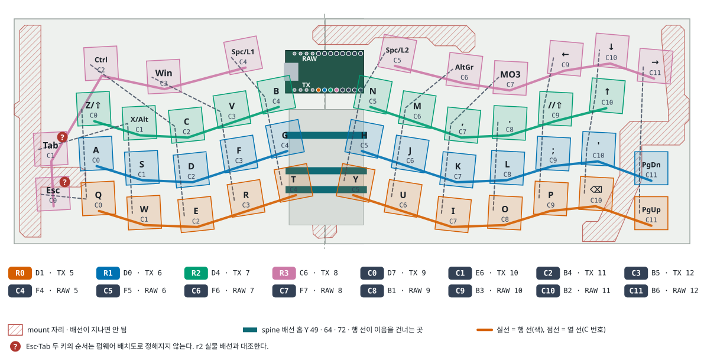
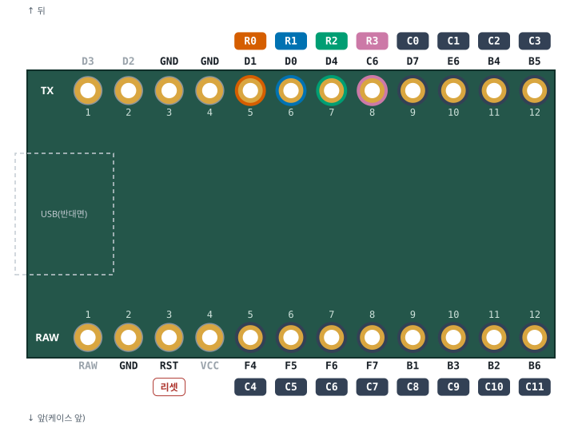
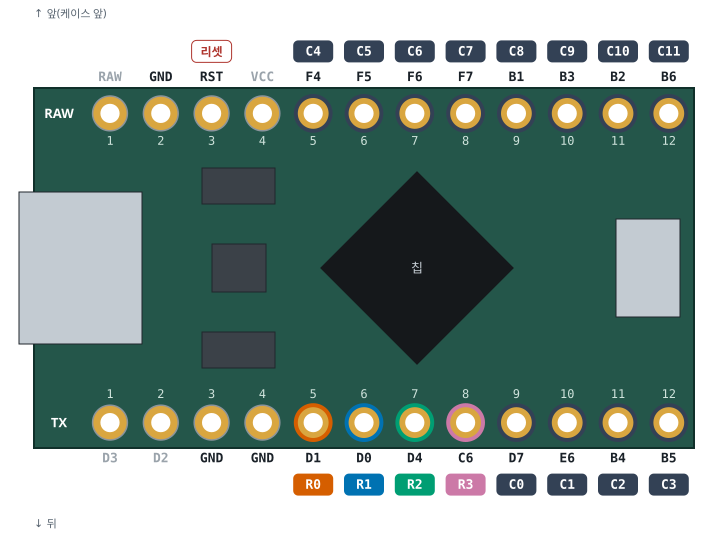
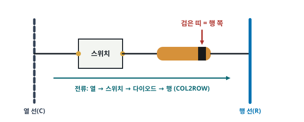
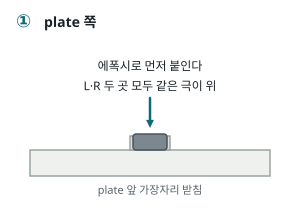
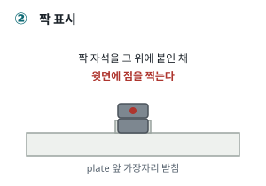
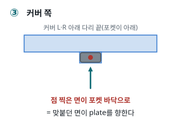
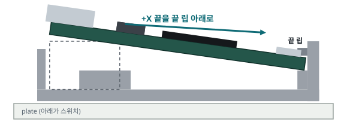
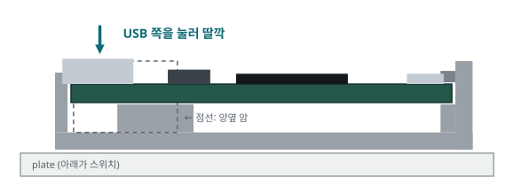
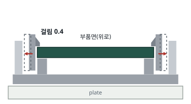
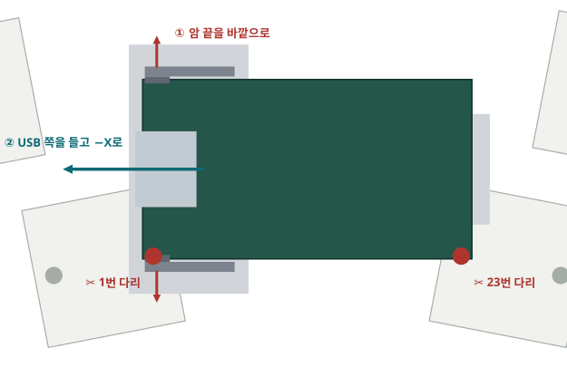
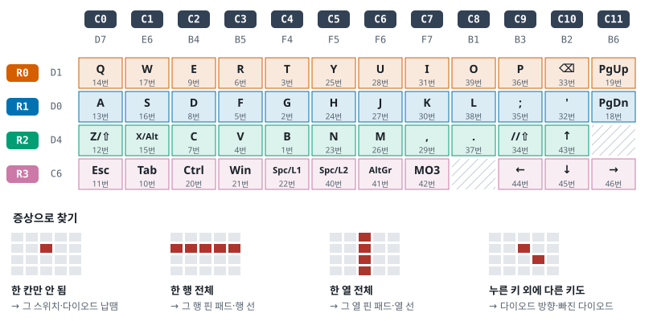
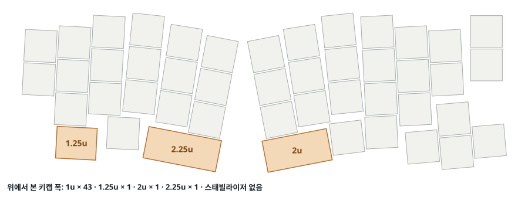